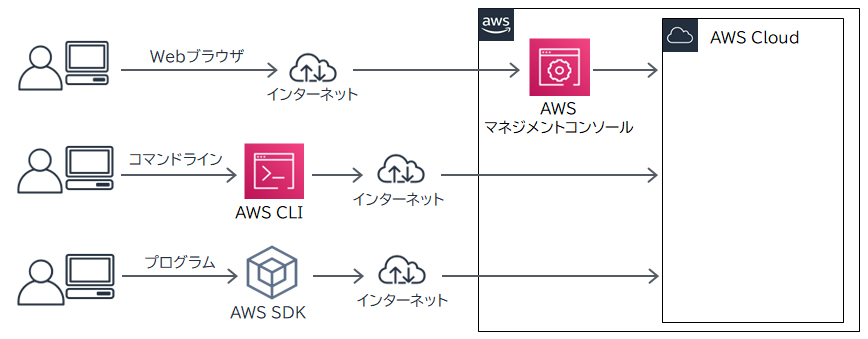
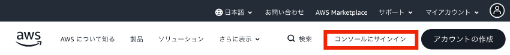
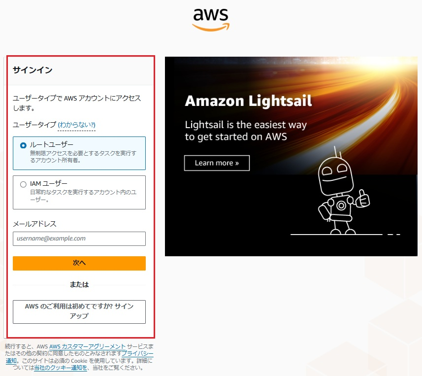
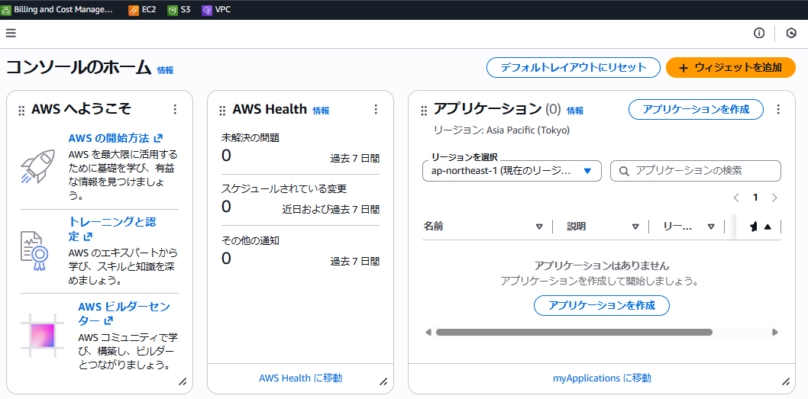
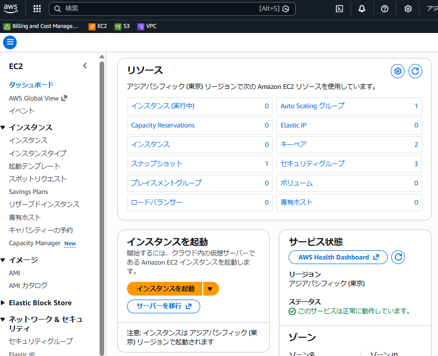
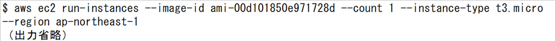
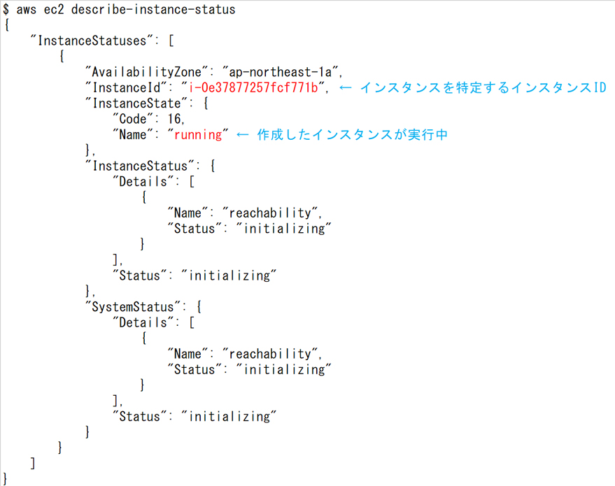
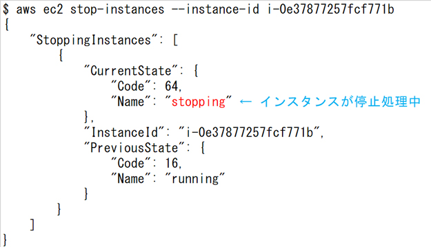
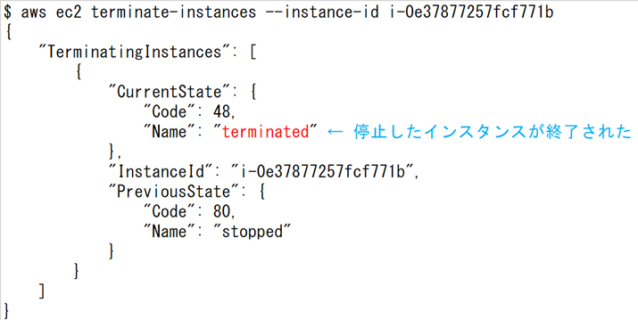

🖥 AWSの運用方法 CLF
AWSには3つの主要なアクセス方法があります：管理コンソール（GUI）・CLI・SDK。 どの方法でも同じAWSリソースを操作でき、用途や好みに合わせて使い分けます。
AWSへの3つのアクセス方法

🖥 AWS管理コンソール（GUI）
Webブラウザからアクセスするグラフィカルインターフェース。直感的で操作しやすく、AWSを初めて使う場合や設定確認に便利。各サービスの概要やリソース状態を視覚的に確認できます。
URL: console.aws.amazon.com
⌨️ AWS CLI（コマンドラインインターフェース）
コマンドラインからAWSを操作するツール。Windows・Mac・Linux対応。スクリプト化・自動化に最適。複数リソースの一括操作や繰り返し作業の効率化に使用。
例: aws ec2 describe-instances
💻 AWS SDK（ソフトウェア開発キット）
Python・Java・JavaScript・Go等のプログラミング言語からAWSを操作するためのライブラリ。アプリケーションにAWSサービスをプログラムで組み込む際に使用。
例: boto3（Python）、aws-sdk（JavaScript）
管理コンソールの使用例








アクセス方法の比較
| 方法 | 使いやすさ | 自動化 | 主な用途 |
|---|---|---|---|
| 管理コンソール | ◎ 直感的・GUIで操作 | ✕ 手動操作 | 学習・設定確認・監視 |
| AWS CLI | △ コマンド覚える必要あり | ◎ シェルスクリプトで自動化 | 繰り返し作業・バッチ処理 |
| AWS SDK | △ プログラミング知識必要 | ◎ アプリに組み込み | アプリ開発・API連携 |
🔶 試験のポイント（CLF）
- 3つのアクセス方法：コンソール（GUI）・CLI・SDK
- CLIはコマンドラインから操作、スクリプト化・自動化に最適
- SDKはプログラミング言語からAWSをプログラムで操作
- 全3方法ともIAM認証情報（アクセスキーまたはロール）でアクセス制御される
- 管理コンソールはユーザー名+パスワード、CLIとSDKはアクセスキーID+シークレットアクセスキー